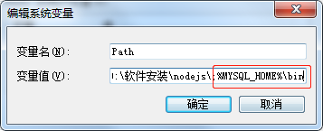

Mysql8版本的安装，Windows系统，与Mysql5.7安装有些许不同，进行记录
下载安装包
解压安装包,配置环境变量
解压地址 : D:\Mysql\mysql-8.0.18-winx64
环境变量配置 :
MYSQL_HOME
PATH

my.ini配置文件
MYSQL_HOME路径下新建文件my.ini,写入 :
1 | [mysql] |
管理员身份运行CMD
打开“开始”菜单 –> 进入“所有程序–附件”中 –> 找到到命令提示符 –> 右键点击命令提示符 –> 选择“以管理员权限运行”
安装并启动Mysql
进入Mysql安装目录bin目录下
安装Mysql
mysqld install
初始化data目录
mysqld --initialize-insecure
启动mysql
net start mysql
登录mysql(第一次登陆无须输入密码)
mysql -u root -p
修改ROOT用户密码
alter user ‘root’@‘localhost’ identified with mysql_native_password by ‘new-password’;
为root用户授予所有权限
从MySQL 8开始,不可以(隐式)使用GRANT命令创建用户,改用CREATE USER,然后使用GRANT声明：
CREATE USER 'root'@'%' IDENTIFIED BY 'root';
GRANT ALL PRIVILEGES ON *.* TO 'root'@'%' WITH GRANT OPTION;
刷新权限
flush privileges;
错误处理
删除Mysql
mysqld --remove mysql
驱动类
com.mysql.cj.jdbc.Driver
时区问题报错
1 | java.sql.SQLException: The server time zone value '�й���ʱ��' is unrecognized or represents more than one time zone. You must configure either the server or JDBC driver (via the serverTimezone configuration property) to use a more specifc time zone value if you want to utilize time zone support. |
错误信息 : java.sql.SQLException: 服务器时区值’?? u±e×??±??未被识别或代表多个时区。如果希望利用时区支持，必须配置服务器或JDBC驱动程序(通过serverTimezone配置属性)，以使用更特殊的时区值
解决办法 : JDBC连接的URL后面加上serverTimezone = GMT，如果需要使用GMT + 8时区，需要写成GMT％2B8
更改后URL代码 : jdbc:mysql://192.168.98.105:3306/henghe_iris?useUnicode=true&characterEncoding=utf-8&allowMultiQueries=true&rewriteBatchedStatements=true&serverTimezone=GMT
Navicat连接MySql8出现2059错误
错误原因 : 首先出现2059这个错误的原因是因为在mysql8之前的版本中加密规则为mysql_native_password。但是在mysql8以后的加密规则为caching_sha2_password
解决办法 : 将mysql用户登录的加密规则进行修改。修改为mysql_native_password
执行命令 : ALTER USER 'root'@'localhost' IDENTIFIED BY 'root' PASSWORD EXPIRE NEVER;